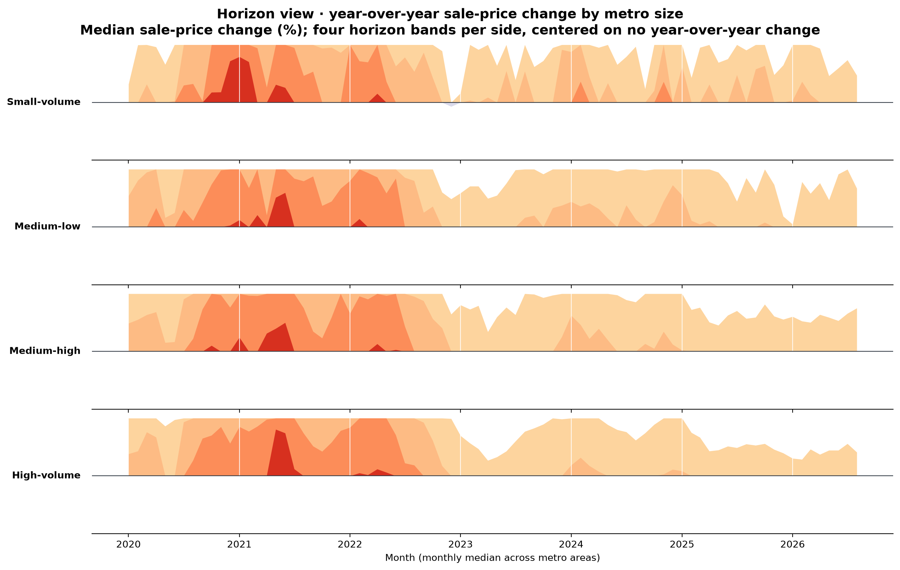
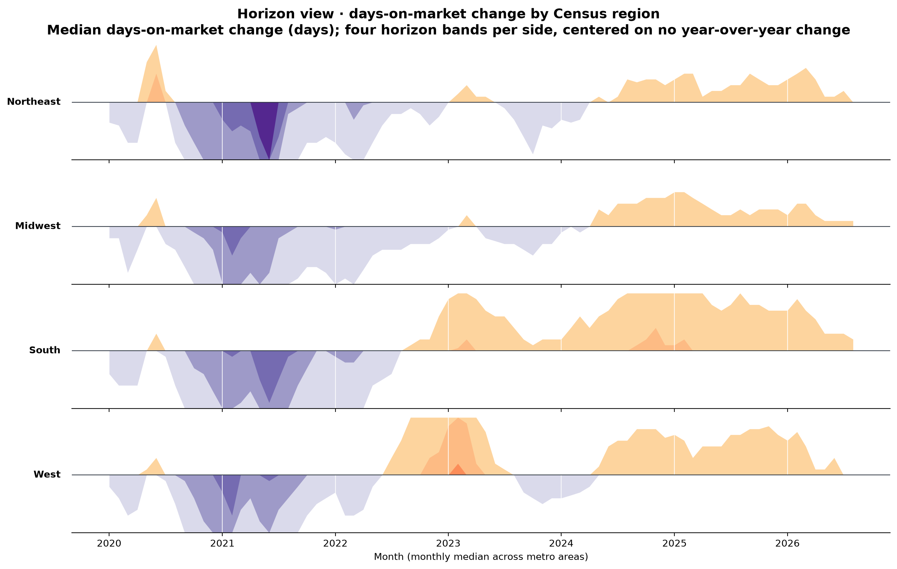
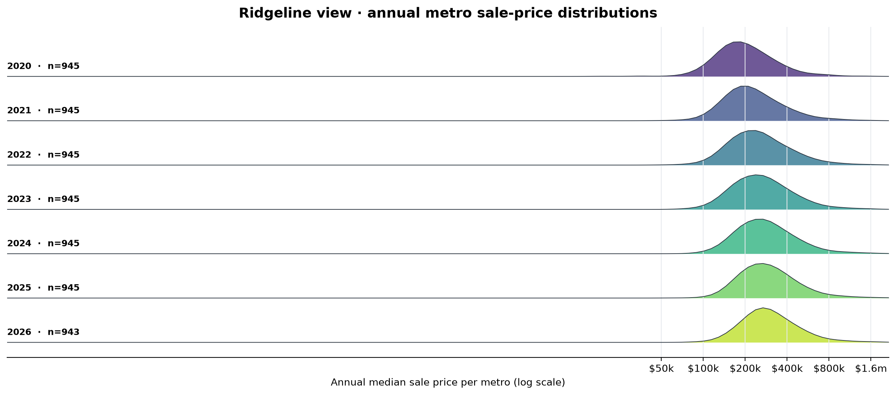
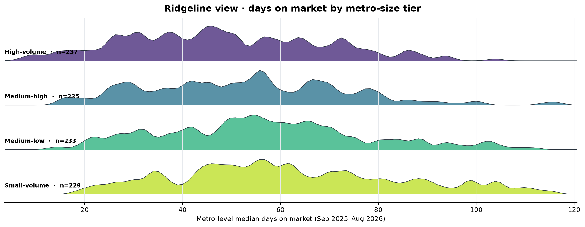

Horizon variation 1 · sale-price change
Monthly metro-group medians of sale-price change from a year earlier, separated into positive and negative horizon bands around zero.

DAS732 · ASSIGNMENT 2 · INFOVIS
Directed page-to-page link flows. Node size reflects full in/out click volume; edge width reflects clicks on the selected core graph.
Select a preview to show that algorithm in the main network. Spring emphasizes local clusters, Kamada–Kawai balances graph distances, and ForceAtlas2 uses attraction and repulsion to separate connected regions.
Each polyline represents a metro in the selected month. Housing measures share normalized axes; lines bundle toward the median profile for their fixed market-size tier.
Explore state and metro hierarchies for one monthly snapshot.
Area encodes an additive market count; color encodes the selected measure. Median prices are shown as color, not added together.
The housing data contains monthly observations, so these horizon plots show real temporal changes. Ridgelines compare distributions across years and metro-size groups.
Monthly metro-group medians of sale-price change from a year earlier, separated into positive and negative horizon bands around zero.

Monthly medians of year-over-year days-on-market change grouped by Census region. Positive values mean homes take longer to sell than a year earlier.

Each ridge shows the distribution of metro-level annual median sale prices. The log scale keeps lower- and higher-priced markets visible together.

Metro-level median days on market over the latest 12 months, compared across the fixed homes-sold size tiers.
